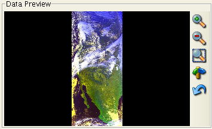

The data preview panel shows a preview image of the selected satellite dataset:

Depending on the server, the image may represent a false color composite of sensor bands, a grayscale enhancement of one sensor band, and so on. You can modify the image using the toolbar buttons on the right to magnify, shrink, box zoom, pan, or reset the view.